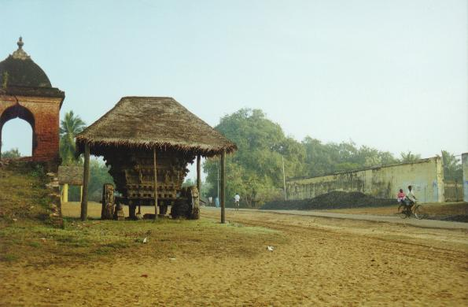
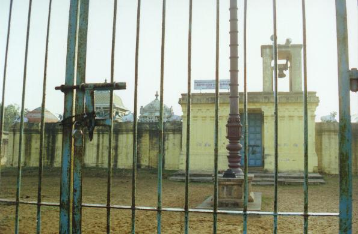

cōpuram
- Identifier: NA06
- Modern Name (NIC):
- Modern Name (M.I.): tiyākavalli
- Modern Name (Govt Press): tiyākavalli, tiruccōpuram
- Modern name: Tiruccōpuram
- Modern District & Taluk: kaṭalūr DT (kaṭalūr TK)
- Old administrative location: South Arcot DT (Cuddalore TK)
- Taluk: Kaṭalūr (kuṟiñcippāṭi ūrāṭci oṉṟiyam)
- Nearby town: Ālappākkam
- Nearby river: uppaṉāṟu (UNVERIF.)
- Visit date: 2000/02/17 (jlc, sas, Babu)
- GPS reading: 11 deg. 36.95' (N); 79 deg. 44.51' (E)
- Railway station: Ālappākkam (E: 3km)
- Longit. 79 deg. 45'; Latit. 11 deg. 37' [NA06]
- C.D.Maclean-3: entry: CUDDALORE, p. 242, col. 2,
[Tyaugavully [tiyākavalli], lat. 11deg. 37', long. 79deg. 47',
ancient Shiva temple buried in sand]
- Location: according to PK: Naṭu Nāṭu (NA06)
- Name inside hymns:
- Name inside PK: cōpuram
- Rank inside third volume of PIFI: 142
- Rank inside Civastala Mañcari: 141
- Rank on PY576 map: 68
- Total number of patikam-s: 1
- Campantar: 1 patikam
3 pictures taken on 2000 february 17th (by jlc)



- Patikam 1_51